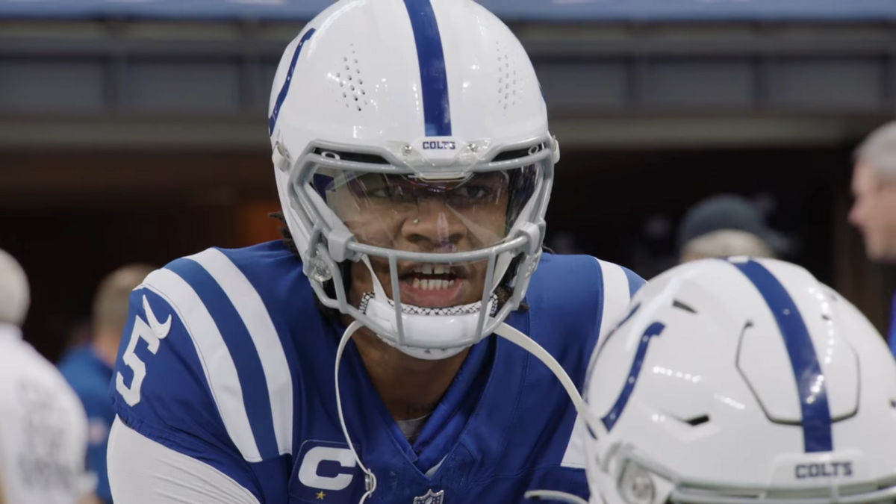

CC BY 3.0 All-Pro Reels
For the fourth straight season, the Indianapolis Colts missed the playoffs. Young, project QB Anthony Richardson was injured, only appearing in 10 games due to hip and back injuries. He also missed 13 games in the 2023 season with a shoulder injury. Richardson finished his 2024 season with a 47.7% completion percentage, 1814 passing yards with 8 TDs, 12 INTs, 499 rushing yards and 6 rushing TDs. It was a step back from his short 2023 season and left Colts fans wondering: Is Anthony Richardson our QB of the future? Are we going to succeed next season? Let’s try to answer that question.
New Additions
Colts hired former Bengals DC Lou Anarumo. The former Bengals DC was criticized for not playing young players in Cincinnati, and his defense was sub-par at best. The Colts run defense was also terrible (131.8 rushing yards per game, 23rd in the NFL) especially early in the season. Lou Anarumo does run a similar zone scheme with a 4-3 base, but most people would say Lou Anarumo is an upgrade over Gus Bradley.
One thing that does inspire hope into Colt’s fans is free agency (did not think I would be saying that with Chris Ballard at GM). Colts signed Charvarius Ward to a 3-year $60 million contract and Cam Bynum to a 4-year $60 million contract. Ward will travel with the opposing WR1 and joins a solid CB room including Jaylon Jones, Juju Brents, Sam Womack, and Kenny Moore in the slot. Colts also signed DT Neville Gallimore. The D line should improve with second year player Laiutu Latu developing. The defense was ranked 23rd against the run and 26th against the pass in terms of yards, and should be better next season.
Offense
CC BY-SA 4.0 Bryan Horstman
The offense lost two very important pieces on the offensive line in Center Ryan Kelly and Guard Will Fries. Rookie center Tanor Bortolini played a few games in Kelly’s absence this season and played better than Kelly. However, an area where the Colts will feel an effect is in the guard position. Will Fries was ranked as the 4th best guard by PFF before his tibia injury. He earned a 5-year $88 million contract. Dalton Tucker and Mark Glowinski played when Fries got hurt and the line was worse.
contract. Dalton Tucker and Mark Glowinski played when Fries got hurt and the line was worse. Nonetheless, Colts still have some nice pieces. Michael Pittman Jr. is a solid receiver, Josh Downs is severely underrated in the slot, AD Mitchell can hopefully develop into a good player, and Alec Pierce is an amazing deep threat. Running back Jonathan Taylor is great, and the signing of RB Khalil Herbert will help him out.
The biggest issue for this offense is the lack of a good TE. The Colts currently have Andrew Ogletree, Mo-Alie Cox, and Will Mallory as their main tight ends (Jelani Woods is a TE on the roster, but he has not played since 2022). This group has an argument for the worst in the NFL. Most free agent TE’s have been signed, but there is some good news for Colts fans: This is a very deep TE draft class, with players like Tyler Warren, Colsten Loveland, Harold Fanning Jr, Elijah Arroyo, and others.
Will They Compete?
Colts need some depth on defense, a guard, and a NFL caliber TE. However, none of that matters if Anthony Richardson doesn’t develop. Daniel Jones is not the future of this team, and will lead this team to an at best, 8-9 record, otherwise known as mid. I see the ceiling of this team at 9 wins. Paper Tiger Media’s prediction for the 2025-2026 Indianapolis Colts season? 7-10, finishing 2nd in the AFC South, missing the playoffs.